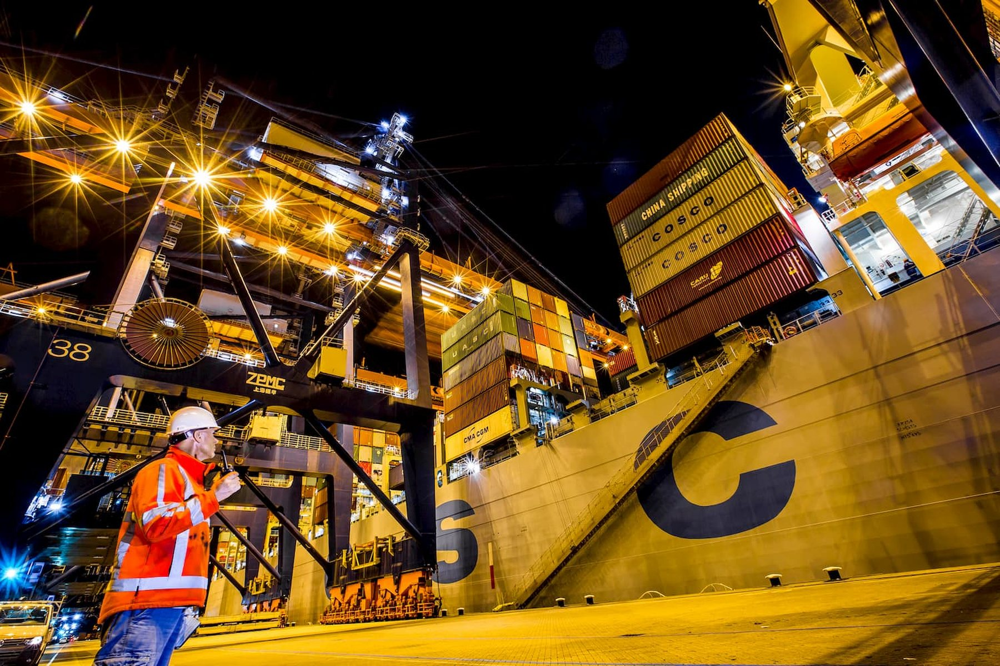
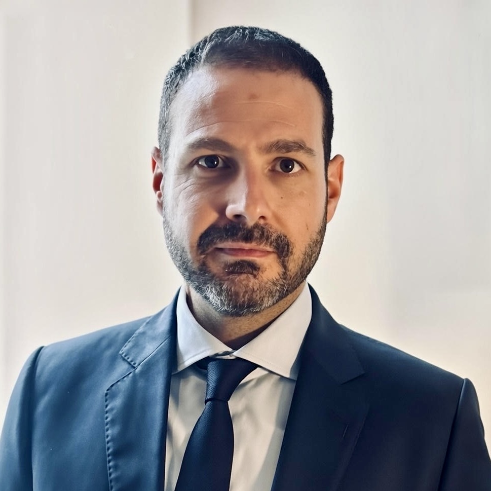
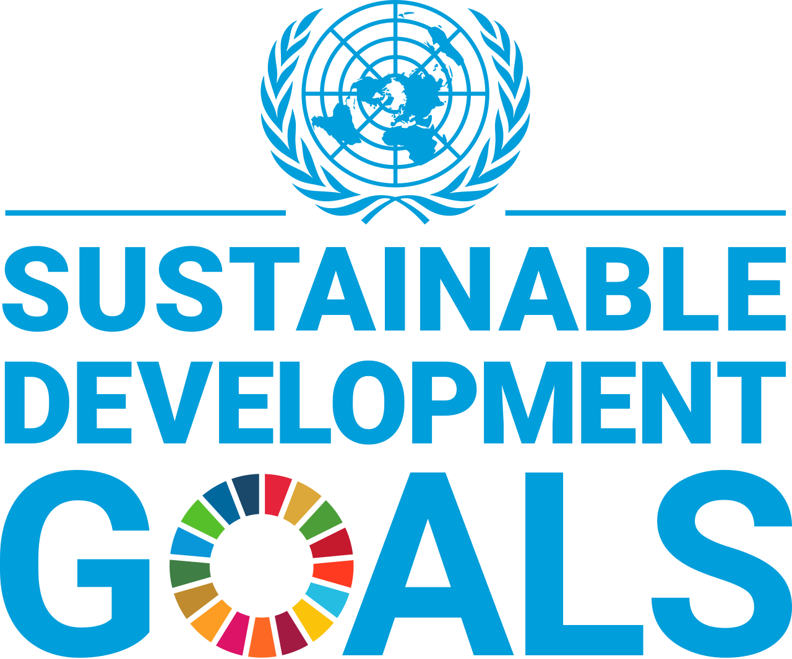

Building a safer working culture for The Levant and the region.
LEUSI is a Netherlands-based social initiative dedicated to HSSE (Health, Safety, Security, and Environmental) awareness, training, and certification readiness for frontline workers in Lebanon and Syria and the MENA region. We connect human dignity, practical safety, and European professional standards.
Our 2026 targets

Safety is not only compliance. It is protection, dignity, and trust.
LEUSI helps workers, employers, and institutions move from reactive safety behaviour to preventive safety culture. Our work is designed for people who face real operational risks, often with limited access to structured training, certification, and institutional protection.
HSSE Awareness
Practical awareness in health, safety, security, and environmental protection for frontline workers and communities.
Training and Certification
Accessible training pathways aligned with Dutch and European safety principles, including VCA-oriented learning.
Worker Readiness
Preparing workers with the safety mindset, discipline, and professional habits expected by European and international companies.
Institutional Impact
Supporting long-term safety culture, pilot locations, and future policy development in Lebanon and the wider region.
Practical pathways from awareness to readiness.
LEUSI develops modular training and certification-oriented programs that can be adapted for workers, employers, NGOs, and public institutions.
Frontline HSSE Awareness
Simple, accessible, and practical safety learning for workers exposed to real operational risk.
Train the Trainer
Building local HSSE ambassadors who can transfer safety practices inside workplaces and communities.
Employer Readiness
Supporting responsible employers, contractors, NGOs, and institutions with safer implementation practices.
Led by infrastructure, energy transition, and HSSE delivery experience.
LEUSI is founded by Mohamad Kabbara and is based in The Hague, with experience across architecture, urban strategy, energy transition, EV infrastructure, project delivery, and HSSE governance in European and international environments.

Mo Kabbara ↗
Founder, Leadership for European Safety Initiative
Mo’s background spans senior roles at BP and AECOM across EV infrastructure, HSE governance, and program delivery in Europe, the GCC, and Africa. He holds an MSc in Architecture, an MBA, and credentials from LSE and Harvard Kennedy School. LEUSI builds on this experience to create practical safety pathways for workers, employers, NGOs, and institutions operating in fragile and high-risk environments.
A mission-first structure with room for partnerships, accountability, and long-term scale.
LEUSI’s governance model, operating principles, accountability structure, and long-term organizational pathway are explained in detail in the Strategic Organizing Framework.
View Organizational Framework →From training activity to measurable safety culture.
The policy plan will define the foundation’s mission, governance, programs, financial model, partnerships, insurance needs, risk controls, and measurable impact indicators.
From individual awareness to system change.
LEUSI starts with people. We train workers, develop local safety ambassadors, support pilot locations, and use evidence from practice to strengthen safety expectations across employers, communities, and institutions.
Train
Deliver accessible HSSE learning for workers exposed to operational risks.
Organise
Develop ambassadors who can influence teams, families, and workplaces.
Pilot
Demonstrate measurable safety compliance in selected locations.
Scale
Build partnerships that support policy, certification, and long term safety culture.
Building a credible circle of institutional, corporate, and civil society advisors.
LEUSI is developing its advisory and partnership network. Formal roles will be confirmed only after governance, responsibilities, and legal implications are clearly defined.
Energy, infrastructure, and industry
Renewable energy, maritime and seaports, airports, railways, logistics, agriculture, civil infrastructure, buildings, manufacturing, and local workshops.
NGOs, civic society, and community leadership
Community building, local development, inclusion and diversity, constituency building, worker protection, and grassroots leadership development.
Certification and standards partners
Safety training and certification pathways inspired by Dutch VCA, EU, and international standards, adapted to local realities and contextualized workplace risks.
Public, private, and PPP institutions
Public institutions, governmental bodies, private institutions, municipalities, development actors, and public private partnership platforms.
Designed for workers and the institutions that protect them.
LEUSI works at the intersection of safety, social enterprise, workforce development, ESG, and responsible market entry.
Connecting workers, institutions, and partners across high-risk environments.
Frontline workers in Lebanon and Syria and potentially the GCC
Refugees and vulnerable workers active in high-risk sectors
Local employers, contractors, and training centers
Dutch and European companies entering Levant and regional markets
NGOs, municipalities, donors, and development partners
Diaspora professionals seeking measurable social impact
Where we are right now.
LEUSI is in active development. Formal registration as a Netherlands-based foundation is underway. Pilot programs are planned for Q3 2026. We are currently building our advisory network and welcoming conversations with potential partners, donors, and institutional allies.
LEUSI is currently shifting from foundation-building to structured organizing, partnership development, and pilot preparation. For the detailed implementation pathway, please visit the step-by-step organizing strategy in the LEUSI Strategic Organizing Framework.
View Step-by-Step Strategy →Public Narrative, Theory of Change, Power Building, Strategy, Tactics, and Coaching Leadership
A practical framework for building safety leadership, constituency power, institutional trust, and measurable HSSE transformation across the Levant and the region.
HSSE as a chain of human protection.
The cards keep the recognizable SDG colour identity. Hover or tap each goal to bring its impact logic into the centre of the screen.

Help build a practical safety movement rooted in dignity and measurable impact.
Let’s connect around pilots, partnerships, and certification pathways.
LEUSI welcomes conversations with safety professionals, employers, NGOs, donors, municipalities, certification partners, and diaspora leaders.